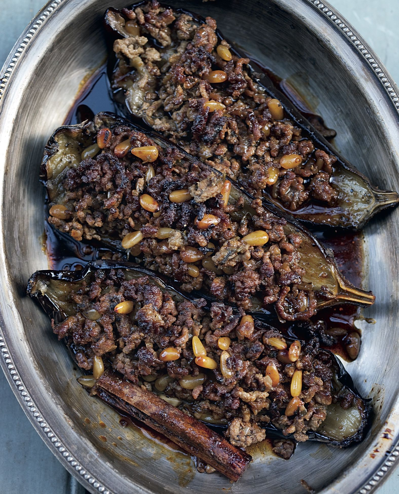

Stuffed aubergine with lamb & pine nuts

Elran Shrefler is the youngest of Ezra and Rachela Shrefler’s nine children, who run Azura, a restaurant in the heart of Machne Yehuda market that serves Jerusalemites traditional Kurdish recipes with a Turkish influence, the area from which Ezra hails. A member of the Slow Food movement, Elran starts work at four every morning and cooks all his food in massive pots on small oil-burning stoves (see picture on pages 122–3), just as his family has done for generations. His food, long-cooked stews and hearty soups, is ready for the first customers who arrive at around 8 a.m. (!). It is essentially real fast food – after the long hours of slow cooking, it takes seconds to plate and serve. Elran showed us how to make his stuffed aubergine, Turkish-style, which is our favourite dish at Azura. This is our interpretation.
Preheat the oven to 220°C/200°C Fan/Gas Mark 7.
Place the aubergine halves, skin-side down, in a roasting tin large enough to accommodate them snugly. Brush the flesh with 4 tablespoons of the olive oil and season with 1 teaspoon of salt and plenty of black pepper. Roast for about 20 minutes, until golden brown. Remove from the oven and allow to cool slightly.
While the aubergines are cooking, you can start making the stuffing by heating up the remaining olive oil in a large frying pan. Mix together the cumin, paprika and ground cinnamon and add half of this spice mix to the pan, along with the onion. Cook on a medium-high heat for about 8 minutes, stirring often, before adding the lamb, pine nuts, parsley, tomato purée, 1 teaspoon of the sugar, 1 teaspoon of salt and some black pepper. Continue to cook and stir for another 8 minutes, until the meat is cooked.
Place the remaining spice mix in a bowl and add the water, lemon juice, tamarind, remaining sugar, cinnamon sticks and ½ teaspoon of salt; mix well.
Reduce the oven temperature to 195°C/175°C Fan/Gas Mark 5½. Pour the spice mix into the bottom of the aubergine roasting tin. Spoon the lamb mixture on top of each aubergine. Cover the tin tightly with foil, return to the oven and roast for 1 hour 30 minutes, by which point the aubergines should be completely soft and the sauce thick; twice through the cooking, remove the foil and baste the aubergines with the sauce, adding some water if the sauce dries out. Serve warm, not hot, or at room temperature.